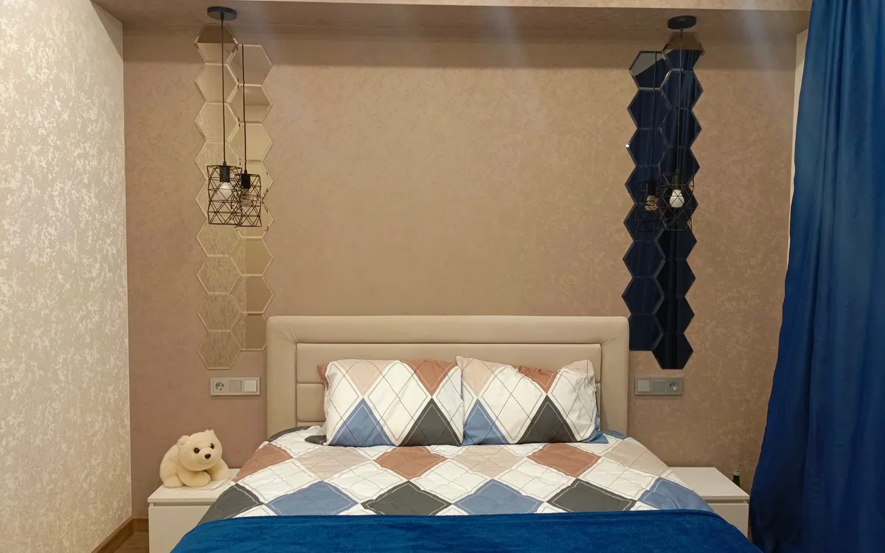
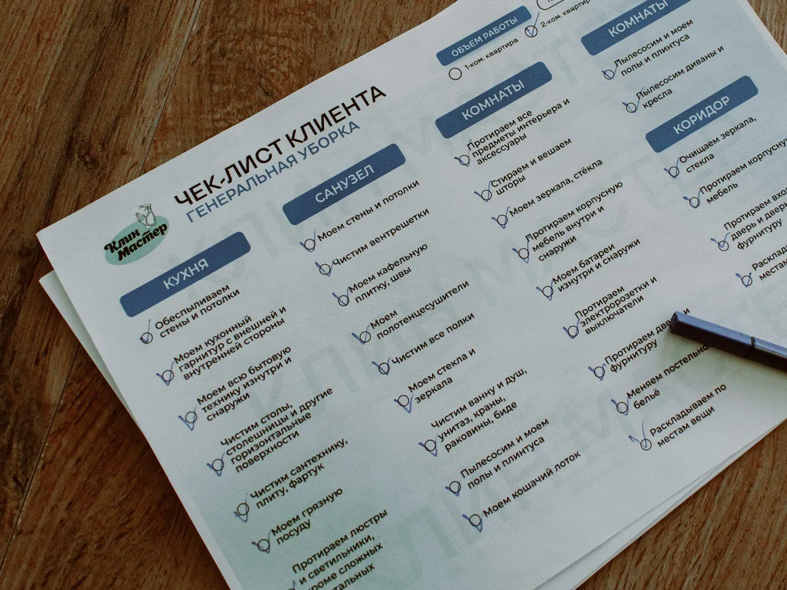
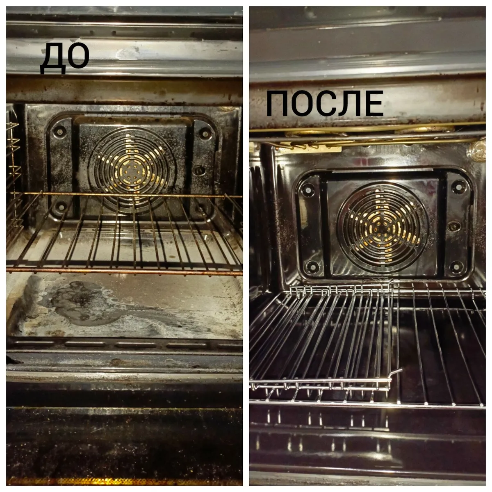
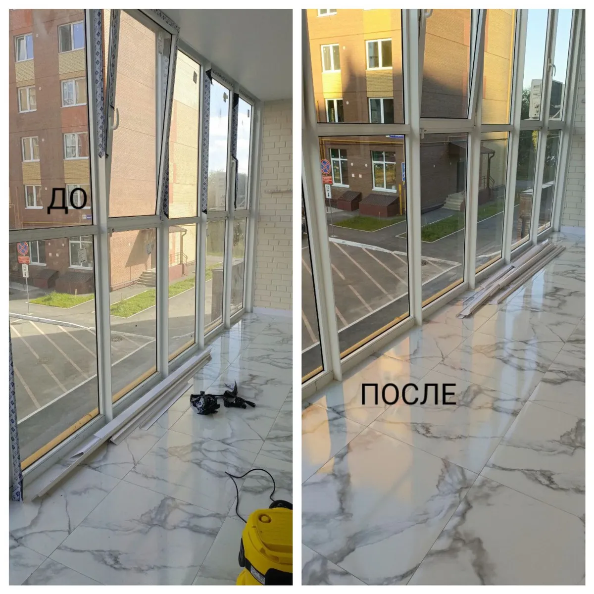
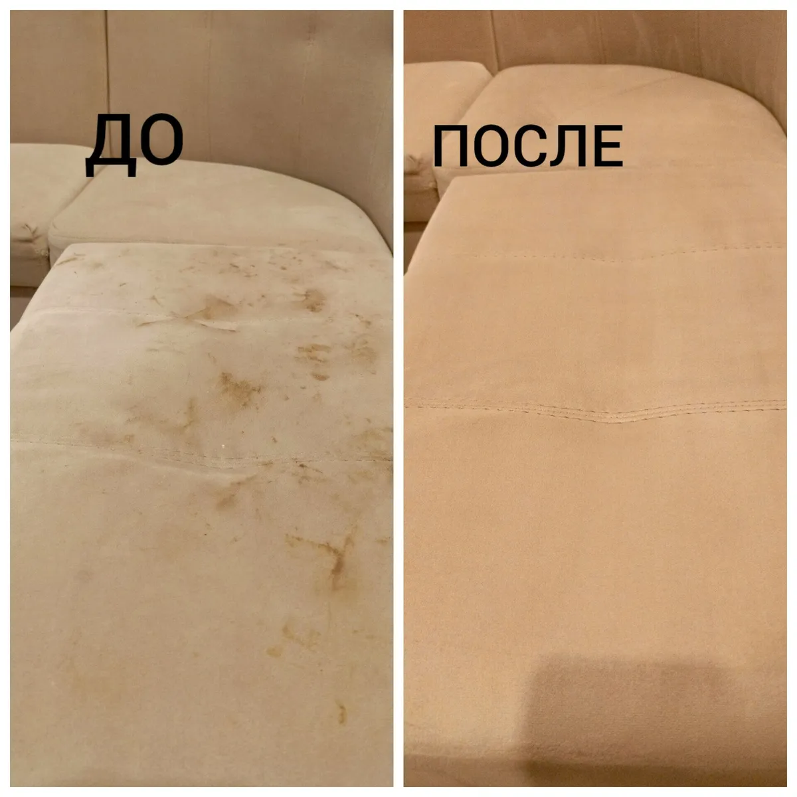

Клининговая компания · Йошкар-Ола
Уборка квартир в Йошкар-Оле: приедем вовремя, со всем своим
Генеральная и поддерживающая уборка, химчистка мягкой мебели. Свой пылесос, парогенератор и профессиональные средства - ничего покупать не нужно.
- Генеральная уборка по чек-листу, от 9 500 ₽
- Свои пылесос, парогенератор и средства
- Круглосуточно: звоните и пишите в любое время

Что входит в генеральную уборку

Что делаем по зонам
- Кухня: гарнитур снаружи и внутри, вся бытовая техника, плита и фартук, посуда, полы и плинтусы
- Санузел: стены и потолок, вентрешётки, плитка и швы, ванна или душ, унитаз, краны, раковины, полотенцесушитель
- Комнаты: корпусная мебель внутри и снаружи, батареи, розетки и выключатели, двери и фурнитура, зеркала и стёкла
- Коридор: зеркала и стёкла, корпусная мебель, входная дверь и фурнитура
- Мягкая мебель: диваны и кресла пылесосим
Считаем отдельно
- Химчистка мягкой мебели, ковров и детских колясок
- Озонирование от запахов
- Уборка после ремонта и строительства
- Мойка окон
Цены на уборку и химчистку в Йошкар-Оле
Цены указаны от: итоговую сумму назовём после уточнения площади и задач. Пылесос, парогенератор и средства наши, отдельно за них не берём.
Уборка квартир
- Поддерживающая (поверхностная) уборканаводим чистоту в видимой части помещения и убираем пыль; без перемещения тяжёлой мебели и уборки внутри шкафовот 2 800 ₽
- Генеральная уборкачистим всё помещение от пола до потолка по чек-листу: кухня, санузел, комнаты, коридорот 9 500 ₽
Химчистка и озонирование
- Химчистка мягкой мебеливозвращаем мебели прежний вид и убираем пыль из тканиот 1 000 ₽
- Озонированиеубираем неприятные запахи и обеззараживаем помещениеот 2 000 ₽
Нужной услуги нет в списке? Позвоните или напишите: +7 (967) 759-55-00.
Как заказать уборку в Йошкар-Оле
- 01
Позвоните или напишите
Назовите вид уборки, адрес и площадь: WhatsApp или +7 (967) 759-55-00.
- 02
Согласуйте объём
Подскажем, что входит в уборку, и назовём сумму после уточнения площади и задач. Оплатить можно картой, наличными, переводом или через СБП.
- 03
Встречайте клинеров
Приезжаем со своим пылесосом, парогенератором и профессиональными средствами.
- 04
Проверьте результат
Чек-лист клиента показывает, что сделано в каждой зоне: кухня, санузел, комнаты, коридор.
Фото работ КлинМастер в Йошкар-Оле: духовка, балкон и диван до и после



Чем работает КлинМастер
Приезжаем со всем своим
Профессиональный пылесос, парогенератор, средства и принадлежности возим с собой. Вам ничего не нужно покупать.
Работаем по чек-листу
Генеральная уборка по зонам: кухня, санузел, комнаты, коридор. Что входит, видно в чек-листе клиента.
Средства безопасны для людей и животных
Используем только профессиональные средства, которые не вредят людям и домашним животным.
Дарим чистоту близким
Есть подарочные сертификаты на уборку на 2 000, 3 000 и 5 000 ₽.
Отзывы о КлинМастер в Йошкар-Оле
«Заказывала генеральную уборку. Девушки приехали вовремя, со всем своим, убрали всю квартиру достаточно быстро и качественно.»
Татьяна Яровикова · 31 июля 2025
«Заказали генеральную уборку с техникой компании. Приехали вовремя, привезли профессиональный пылесос, парогенератор, средства и остальное.»
Ашхен Нерсесова · 26 октября 2024
«Вызвали химчистку мягкой мебели. Приехала Екатерина, быстро и качественно почистила диван и стулья. Теперь вся мягкая мебель как новая.»
Татьяна Мудрова · 20 июня 2025
Отзывы с карточки на Яндекс.Картах, без правок.
Частые вопросы об уборке в Йошкар-Оле
Что входит в генеральную уборку?
Работаем по чек-листу по зонам. На кухне моем гарнитур снаружи и внутри, технику, плиту и фартук. В санузле - плитку и швы, ванну или душ, унитаз и краны. В комнатах - мебель, батареи, розетки и двери. В коридоре - зеркала, мебель и входную дверь.
Чем поддерживающая уборка отличается от генеральной?
Поддерживающая наводит чистоту в видимой части помещения и убирает пыль: без перемещения тяжёлой мебели, уборки внутри шкафов и удаления сильных пятен. Генеральная - это чистка всего помещения от пола до потолка.
Нужны ли мои средства и пылесос?
Нет. Приезжаем со своим профессиональным пылесосом, парогенератором, средствами и принадлежностями.
Сколько стоит уборка?
Поддерживающая уборка - от 2 800 ₽, генеральная - от 9 500 ₽, химчистка мягкой мебели - от 1 000 ₽, озонирование - от 2 000 ₽. Точную сумму называем после уточнения площади и задач.
Какую химчистку вы делаете?
Чистим мягкую мебель, ковры, детские коляски и мягкие игрушки. Выезжаем на дом.
Убираете ли после ремонта?
Да, убираем после ремонта и строительства, моем окна и балконы.
Как оплатить и можно ли купить сертификат?
Оплатить можно картой, наличными, банковским переводом, безналичным расчётом или через СБП. Есть подарочные сертификаты на 2 000, 3 000 и 5 000 ₽.
Когда вы работаете и где находитесь?
Работаем круглосуточно: звоните и пишите в любое время. Офис находится в Йошкар-Оле, на улице Эшкинина, 10Б, офис 313. Выезжаем на дом.
Назовите площадь и вид уборки
- Адрес
- ул. Эшкинина, 10Б, офис 313, Йошкар-Ола
- Часы
- Круглосуточно
- Телефон
- +7 (967) 759-55-00